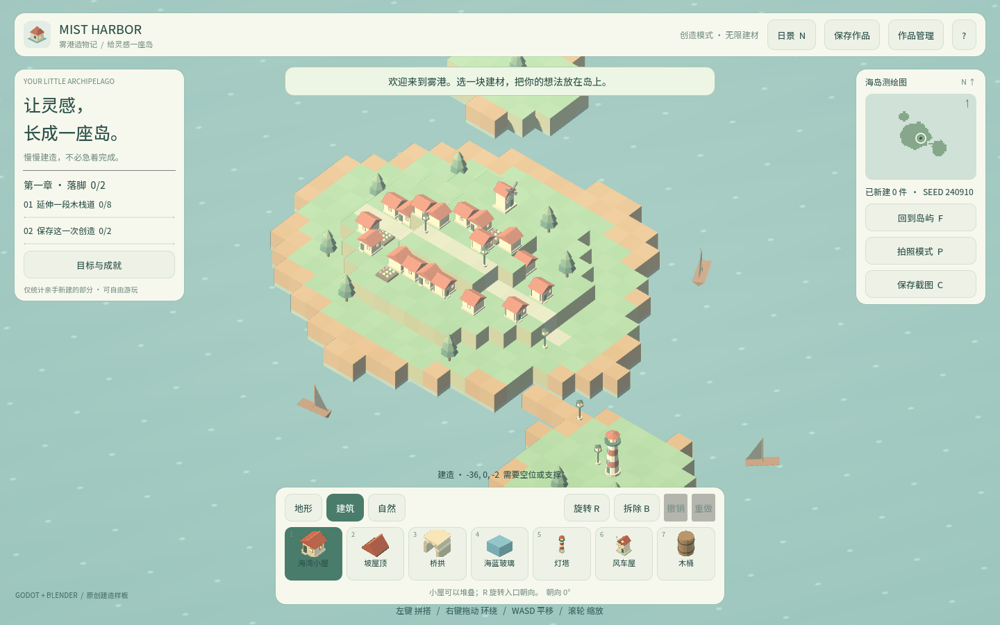
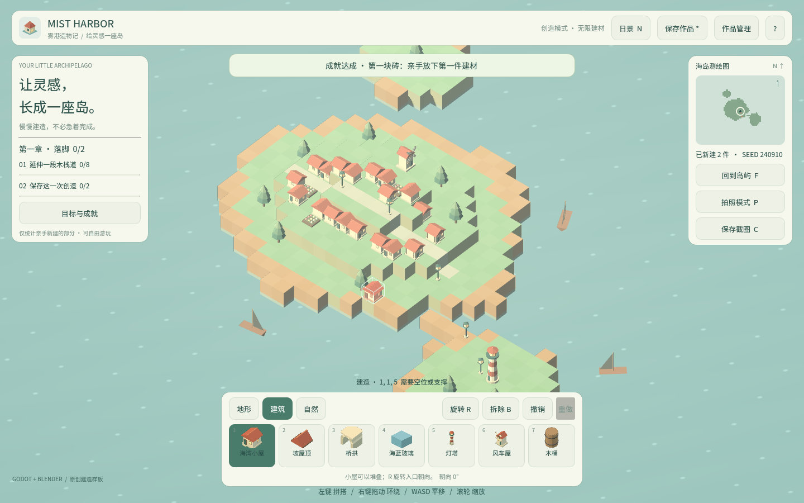

卷 7 · 第 36 章 直播教学与作业批改：把项目变成一门课
本章目标：把前面 35 章沉淀成可交付的教学资产——
8 场直播怎么排、作业怎么批、以及"教学友好"本身就是一种设计目标。
对应任务：T48 | 对应文件：course/README.md的直播表、每章的教学提示
36.1 课程结构：8 卷 36 章怎么拆
| 卷 | 主题 | 定位 |
|---|---|---|
| --- | --- | --- |
| 卷 0 | 启程 | 先跑起来，建立信心 |
| 卷 1 | 设计先行 | 需求与数据驱动（最容易被跳过，也最不该跳过） |
| 卷 2 | Godot 工程 | 引擎侧实现 |
| 卷 3 | 资产管线 | 脚本化建模 + 远程执行 |
| 卷 4 | 玩法系统 | 规则、历史、存档、引导、成就、摄影 |
| 卷 5 | 多端发行 | Web / Windows / 移动端 / 体积 |
| 卷 6 | 质量与协作 | 三层测试、CI、字体、Git |
| 卷 7 | 商业化 | 取舍、渠道、运营、教学 |
8 场直播（每场 90 分钟）的排法（见 course/README.md 的直播表）：
L1 跑通第一个可玩版本 L5 引导与成就（投票新增成就）
L2 从需求到验收 L6 观感调优（A/B 盲测）
L3 世界模型与撤销栈 L7 三端发行
L4 远程 Blender 管线 L8 质量工程与 CI（现场制造回归）每场都配了互动设计——这是"能讲"与"能教会"的分水岭。
36.2 每章三件套，让备课成本趋近于零
每章末尾都固定附有三段：
| 件套 | 作用 |
|---|---|
| --- | --- |
| 🎓 教学提示 | 概念锚点、课堂演示、高频误解、讨论题、批改要点 |
| 📹 录屏分镜 | 时间轴 / 画面 / 解说词，照着录即可（8–15 分钟/章） |
| 🖼 配图清单 | 需要哪些图、怎么生成（可 course_capture.py --chapter NN 批量产出） |
这是本项目最值钱的复用资产：写章时顺手产出，教学时零成本取用。
36.3 作业批改：看什么，不看什么
| 看 | 不看 |
|---|---|
| --- | --- |
| 是否答中"为什么" | 代码是否与我的一模一样 |
| 是否用数据/事实支撑 | 篇幅长短 |
是否触及关键机制（如 owner_at、ceil） | 格式是否漂亮 |
每章的"批改要点"已经写明给分点，例如：
- 第 19 章：必须答出
19 + 3 > 20被第 ② 道闸门拦下 - 第 20 章：要断言
revision或cells回到初值，不是只看 undo 栈长度 - 第 31 章：要区分"约束写死"与"统计推导"
- 第 32 章：要答出
failed==0且passed>0两个条件
📌 批改标准的价值：让助教也能批。写得越具体，课程越可规模化。
36.4 "教学友好"是一种设计目标
回头看，本项目的很多决策都顺带服务了教学：
| 决策 | 教学价值 |
|---|---|
| --- | --- |
QA 快照（harborState） | 学员能在控制台看见内部状态（第 11 章） |
| 断言从数据源推导 | 加资产不改测试 → 作业不会莫名变红（第 31 章） |
| 资产脚本化 | 作业可以"写一段 bpy"而不是"用鼠标点"（第 14 章） |
| 三条契约 + assert | 错误当场暴露，而不是到游戏里才发现 |
| 快捷键表准确 | 直播时不翻车（第 11 章修正过的那张表） |
📌 反过来也成立：教学不友好的项目，往往工程上也含糊。
"讲不清楚"通常意味着"想不清楚"。
36.5 一次真实的教学事故与修正
第 11 章的快捷键表最初是错的（Z/Y 撤销、X 拆除、P 拍照），
直到为第 19/20 章拍图时才发现实际是 Ctrl+Z、B、P=隐藏HUD、C=截图。
| 教训 | 说明 |
|---|---|
| --- | --- |
| 文档会撒谎，代码不会 | 写文档时对照代码，不要凭印象 |
| 用自动化暴露错误 | 拍图脚本按错误的键 → 配图不对 → 立刻暴露 |
| 修正要留痕 | 提交信息里写清"原（错）→ 实际" |
📌 这类"用工具反过来校验文档"的做法，值得复制到任何项目：
让文档与代码互相验证，而不是各自维护。
🌩 在云端 agent（web-cb）里是什么样
| 🖥 本地路线 | 🌩 云端 agent（web-cb） | |
|---|---|---|
| --- | --- | --- |
| 学员环境 | 各自装 Godot（门槛高） | 打开就能跑 → 教学转化率大幅提升 |
| 直播画面 | 本地窗口 | 云端预览即共享画面 |
| 作业提交 | 交代码/截图 | 可交云端工作区链接 |
| 批改 | 人工 | 先用 L1/L2 自动筛，再人工看"为什么" |
| 风险 | 环境不一致 | 版本与模板必须与课程声明一致 |
🌩 云端对教学最大的价值：把"装环境"这一小时还给学习本身。
36.6 常见坑速查（本章）
| 现象 | 原因 | 处理 |
|---|---|---|
| --- | --- | --- |
| 直播翻车（快捷键无效） | 文档凭印象写 | 对照代码校验（36.5） |
| 学员跑不起来 | 环境步骤太多 | 用云端，或写清六步清单（第 32 章） |
| 作业无法规模化批改 | 没有给分点 | 每章写"批改要点" |
| 备课耗时长 | 每章从零准备 | 用三件套（36.2） |
| 讲不清楚某块 | 概念本身含糊 | 把它写成数据/规则再讲 |
| 学员加资产后测试红 | 断言写死数量 | 第 31 章 |
36.7 本章作业（也是全课程的结业作业）
- 说出每章三件套分别是什么，以及它们把备课成本降到了多少
- 解释"教学友好"与"工程清晰"的关系，举本项目的两个例子
- 复述 36.5 的教学事故，说明"用工具校验文档"为什么有效
- 结业设计：选一个你自己的项目，为它写一份"教学化改造清单"（至少 5 条），
每条说明它如何同时改善工程质量与可教性
🎓 教学提示（给教师 / 直播主）
- 概念锚点：讲不清楚 = 想不清楚。教学化是工程质量的探针。
- 课堂演示：拿一块自己项目里"讲不清楚"的部分，试着写成数据/规则。
- 高频误解：学生以为"做课件"是额外工作。强调：写章时顺手产出，边际成本极低。
- 讨论题：你的项目里，哪一处最适合作为第一节公开课的演示？
- 批改要点：作业 4 的五条里，至少三条要同时体现"工程质量"与"可教性"。
🖼 本章图集


📹 录屏分镜（10 分钟 · 全课程收尾）
| 时间 | 画面 | 解说词要点 |
|---|---|---|
| --- | --- | --- |
| 00:00–01:40 | 8 卷结构 + 8 场直播排期 | "36 章，一条主线。" |
| 01:40–03:00 | 每章三件套 | "备课成本趋近于零。" |
| 03:00–04:30 | 批改要点示例（四章） | "让助教也能批。" |
| 04:30–06:00 | 教学友好 = 工程清晰 | "讲不清，通常是想不清。" |
| 06:00–08:00 | 快捷键事故与修正 | "让文档与代码互相验证。" |
| 08:00–10:00 | 结业作业 + 全课程总结 |
🎬 视频位（待录制）
把录好的视频放到course/media/video/36/（mp4 / webm / mov），重新执行 python tools/course_build.py 即会自动内嵌；首帧默认用本章第一张截图作为封面。分镜脚本见上一节。🖼 配图清单
| 文件名 | 内容 | 生成方式 |
|---|---|---|
| --- | --- | --- |
36-course-game.png | 课程教出来的成品（可玩状态） | python tools/course_capture.py --chapter 36 |
36-final-island.png | 结业作品示例（建成的小岛） | 同上 |
🎥 直播脚本（L8 收尾场，90 分钟）
- 开场：从"跑不起来"到"能讲能交付"——回顾 36 章的主线
- 演示：现场制造一个回归，让 CI 抓出来（第 32 章 L8 环节）
- 互动：观众展示自己的结业作品（导出 JSON 互评）
- 收尾：下一站——你的项目
❓ 本章 FAQ
Q：36 章一定要全讲吗？
A：不必。course/README.md 给了三条路线（全卷 / 有经验者跳过卷 0-1 / 只想复刻作品跑五个任务）。
Q：作业答案有标准版吗？
A：每章给了"批改要点"（给分点），但不给唯一答案——能说出为什么即可。
Q：这套课程结构能复用到别的项目吗？
A：能。骨架是"跑通 → 设计 → 实现 → 资产 → 玩法 → 发行 → 质量 → 商业化"，
任何项目都可以按这个八段填内容。